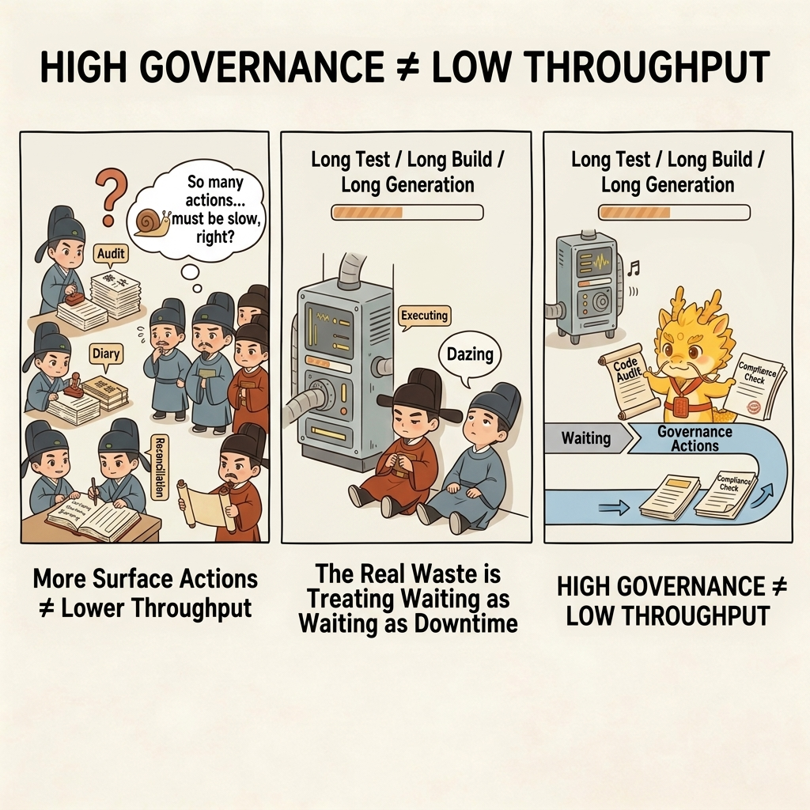
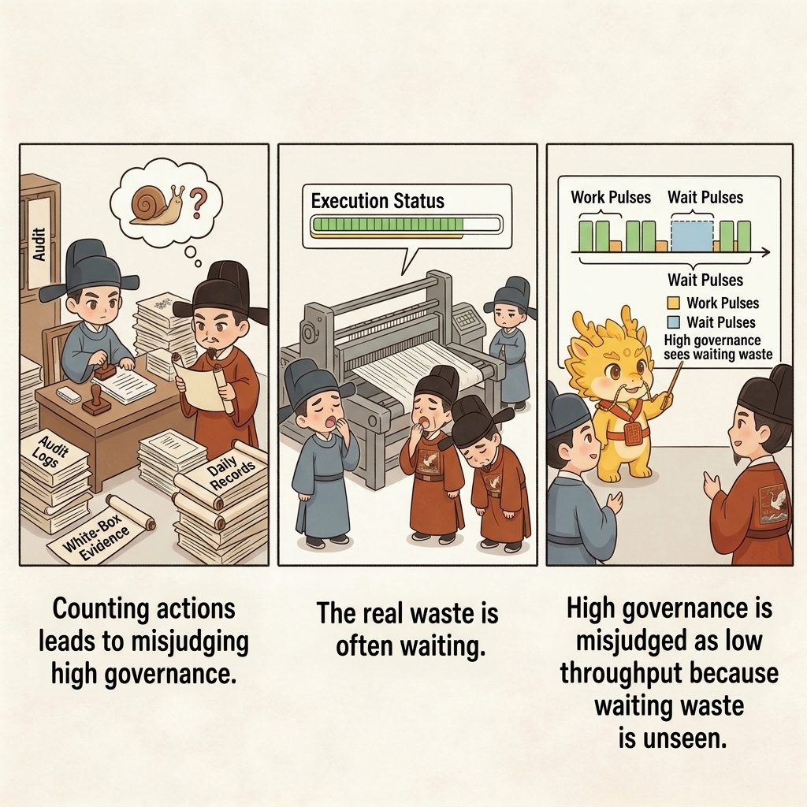
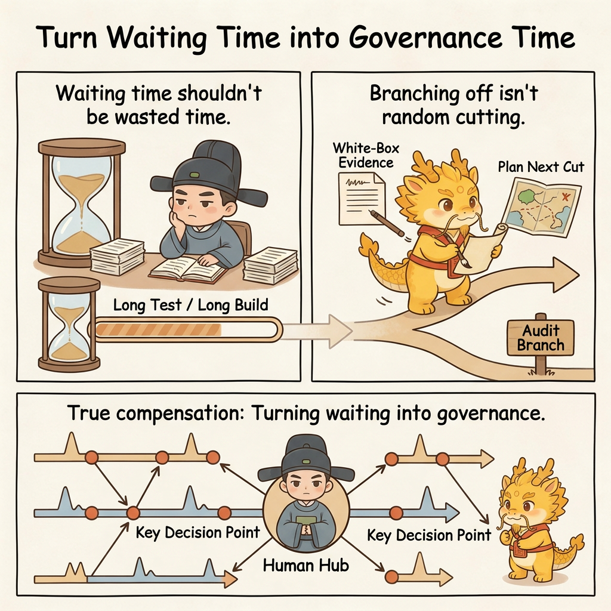

Deep Water
Pulse Enfeoffment

Pulse Enfeoffment: Throughput Compensation Under High Governance
Table of Contents
- What This Page Solves
- Spotting the Problem: Why Many People Mistake High Governance for Low Throughput
- Explaining the Problem: Why Throughput in the Agent Era Is Naturally Pulsed
- Solving the Problem: How Pulse Enfeoffment Turns Waiting Time into Governance Time
- Common Misunderstandings
- One-Line Conclusion
- Related Pages
What This Page Solves
Once many people accept Cyber-Ming-Protocol's high-friction governance, the next doubt is usually very practical:
- You want dual-track audit
- You want human physical routing
- You want high-frequency chronicles
- You want white-box physical reconciliation
- And now you also want enfeoffment, renewal, and debt repayment
This whole stack is obviously steadier. But does it also have to be slower? Does the human center eventually become the real bottleneck of the entire system?
That is exactly what this page answers.
Inside Cyber-Ming-Protocol, pulse enfeoffment is not a sixth pillar, and it is not a retreat from the earlier rituals of high governance. It solves a more practical problem:
Once you have already decided not to go back to black-box automation, how do you win throughput back in deep water without giving up white-box control?
So the real questions here are:
- Why high-friction governance does not automatically mean low throughput
- Why the development rhythm of the agent era is naturally pulsed rather than uniform
- Why the human center can use waiting time to switch windows, switch fiefs, and switch side lines
- When pulsed multi-line advance raises effective throughput, and when it turns directly into disorder
The first judgment to nail down is this:
Pulse enfeoffment is first a throughput-compensation mechanism, not a new pillar. It solves "how high governance avoids being dragged down by idle time," not "how to reduce governance."

Spotting the Problem: Why Many People Mistake High Governance for Low Throughput
The misunderstanding is natural, because from the surface Cyber-Ming-Protocol really does seem to add actions to the development flow:

- One more round of plan audit
- Several more midstream interruptions
- Several more rounds of log forwarding
- Several more Git traces
- Several more rounds of white-box reconciliation
If you count only visible actions, high governance obviously looks inefficient.
But that intuition hides a deeper mistake: it assumes that development throughput depends only on how many process steps there are, while missing the much larger waste that the agent era produces by default - waiting waste.
First Waste: Treating Waiting as Empty Time
In reality, the executor position does not produce output at a smooth, constant rate. It often enters states like these:
- Long generations
- Long test runs
- Long searches
- Long command execution
- Long compile and validation cycles after refactoring
If the human center can do nothing except stare at one window during that time, then yes, process friction will drag throughput down.
Second Waste: Mistaking High Governance for a Single-Threaded March Only
Many people subconsciously interpret "the human must retain judgment" as "the human must stare at one line until that line is fully complete."
That turns governance into a rigid single-threaded labor model:
- One line is not done, so you dare not look elsewhere
- One window has not returned, so you dare not audit another
- One fief has not closed its loop, so you dare not touch any side line
The result is not greater safety. It is simply the waste of usable waiting time.
Third Waste: Confusing Parallel Advance with Opening Windows at Random
On the other side, some people notice this bottleneck and then slide too far in the opposite direction:
- If one window waits, just open many windows at once
- If the human is idle, let every side line run together
- If parallelism is possible, maximize it everywhere
But if the mainline is unclear, the boundaries are blurry, and the fiefs are not isolated, then many windows do not become throughput compensation. They become mixed orders, context interference, and lost sovereignty.
So the real question is never simply "does high governance make things slow?" The real question is this:
Have you reorganized the natural waiting pulses of the agent era into governance time?
Explaining the Problem: Why Throughput in the Agent Era Is Naturally Pulsed
To understand why pulse enfeoffment works, you first have to accept one fact: the rhythm of agent-driven development is not a smooth flow. It is a pulse flow.
First, the Executor Position Naturally Produces Peaks and Troughs of Different Lengths
When humans code by hand, many actions are continuously visible. An agent executor, by contrast, often works for a while and then returns a whole chunk of results at once.
For example, it may:
- Change a batch of files and only then report back
- Run a long test or build and only then return the output
- Conduct a long search-and-reading phase and only then deliver a plan packet
So the executor position does not move like a steady stream. It moves in pulses.
Second, the Human's Highest-Value Moments Are Not Continuous Escort, but Key Judgment Points
Earlier pages already established that the human center is most valuable not when doing low-level execution, but when doing things like these:
- Setting the mainline
- Performing audit
- Making routing decisions
- Interrupting at the right moment
- Verifying truth
Those actions do not require the human to stare at the same executor every second. They look more like a series of high-value judgment points: one window returns in a pulse, and you audit it; another is still waiting, so you switch to another line and govern there.
In other words, the proper rhythm of human governance is not "watch one executor continuously." It is "rotate judgment across several critical nodes."
Third, Throughput Compensation Comes from Reusing Waiting Time, Not from Relaxing Governance
This is the crucial point.
Pulse enfeoffment is not saying:
- Since the process is strict, relax audit a little
- Since governance is high-friction, leave fewer chronicles
- Since you want speed, stop doing white-box reconciliation
What it really says is:
Do not reduce governance. Just stop leaving waiting time idle.
That is why pulse enfeoffment does not weaken the earlier rituals. It assumes they are already in place:
- Clear fief boundaries
- Clear mainline judgment
- A clear standard for entering the capital
- Chronicles as handles
- Human-centered judgment
Only when those things already exist can waiting time be reused safely.
Solving the Problem: How Pulse Enfeoffment Turns Waiting Time into Governance Time
To bring the earlier judgment down to the operational level, we need to nail down one more premise first: real throughput depends less on window count than on mainline clarity.
The prerequisite of pulse enfeoffment is not many windows. It is a clear mainline.
If you do not know:
- Which line is the main battle
- Which lines are side lines
- Which task is merely waiting
- Which tasks can truly run in parallel and which must never do so
then opening more windows is not governance. It is disorder.
That is why pulse enfeoffment does not begin with "parallelize." It begins with "define the mainline."
Once that premise is clear, pulse enfeoffment can be expressed as six very simple moves.
Step 1: Define the Mainline First, Then Talk About Parallel Advance
The biggest taboo of pulse enfeoffment is opening many windows before the mainline is clear.
So before entering pulse mode, the human center must answer:
- What the one and only current main battle is
- Which side lines can be left waiting
- Which fiefs are truly independent and can proceed in parallel
- Which tasks only look separable but actually share the same risk surface
This step determines legitimacy, not pace. Without a mainline judgment, later "parallel advance" has no constitutional basis.
Step 2: One Fief, One Set of Orders - Only Waiting State Allows You to Switch Away
This move is directly connected to Worktree Enfeoffment: Fiefs, Entering the Capital, and Mainline Purity.
Every window, every fief, and every side line must first have:
- A clear boundary
- A clear objective
- A clear way to verify completion
Only then are you qualified to switch away when it enters a waiting state. Otherwise what you leave behind is not a force that can safely hold position. It is a half-finished narrative that nobody can clearly describe.
So the precondition for pulsed switching is not merely "nothing is happening here right now." It is this:
This fief already has clear enough orders that it can be suspended safely while waiting.
Step 3: Turn Waiting Time into Governance Time on Another Line
This is the real core of pulse enfeoffment.

While one executor position is:
- Running tests
- Running builds
- Performing a long search
- Generating a long output
the human center does not need to sit idle. It can switch to another line whose boundaries are already clear and do another high-value move there, such as:
- Auditing the project report of another fief
- Performing white-box reconciliation on another side line
- Planning the next wave of Atomic Execution Contracts
- Reviewing the evidence chain from a previous line
- Advancing a small task that is already fully understood inside another fief
That is why README.md describes this mechanism as turning waiting time into governance time. Throughput compensation does not come from doing less governance. It comes from less staring into empty time.
Step 4: The Mainline Is Singular, Side Lines Can Be Plural, but the Comfortable Limit Is Low
This point deserves special emphasis.
Pulse enfeoffment is not a celebration of unlimited parallelism. Quite the opposite. It assumes:
- There can only be one constitutional mainline
- There may be several side lines
- But there is still only one human brain
So for most people, the comfortable range that still preserves sovereignty is usually only 2 to 3 lines in parallel. Beyond that, what you have is usually no longer parallelism, but disorder.
That is also why pulse enfeoffment is first a compensation mechanism, not a default posture. It helps you recover throughput when waiting states appear, the mainline is clear, and the boundaries are already sound. It is not praise for "more windows is always stronger."
Step 5: Vassals Have No Right of Self-Coronation - Every Pulse Result Must Still Enter the Capital for Review
This point must stay tightly connected to the previous page.
Pulse enfeoffment allows multiple side lines to rotate forward during waiting gaps, but no fief earns direct admission to the mainline just because "things went well over here."
Every result still has to arrive carrying:
- Git chronicles
- Physical evidence
- Rollback handles
- Final audit
and only then may it enter the capital for judgment.
In other words, pulse enfeoffment compensates the tempo at the frontier. It does not lower the standard for entering the capital. It only makes multi-line rotation possible. It does not make mainline purity negotiable.
Step 6: In Teams, Pulse Does Not Mean Everyone Runs Everywhere at Once - It Means Each Person Rotates Their Own Governance Rhythm and Then Converges on the Mainline
This point matters especially in team settings.
Inside a team, pulse enfeoffment does not mean everyone opens many windows wildly at once. It means:
- Each fief owner rotates governance according to their own waiting pulses
- Each side line completes local progress and local audit inside its own territory
- The results then converge on the mainline according to the rhythm of entering the capital
Put differently, worktree enfeoffment solves spatial isolation, while pulse enfeoffment solves temporal utilization. The former tells you where parallelism is legitimate. The latter tells you when switching becomes most valuable.
In real development, the efficient rhythm rarely looks like everyone staring at one window until nightfall. It looks more like this:
- One line is running a long test
- Another line has finished a plan and is waiting for audit
- A third line is waiting for the final reconciliation before merge
If those rhythms are already bounded by law and isolation, team collaboration can reach a very valuable state:
The frontiers advance along separate roads, and the capital converges on rhythm.
Common Misunderstandings
First Misunderstanding: Pulse Enfeoffment Just Means Opening More Windows
No. Multiple windows are only the visible surface. What really matters is recognizing waiting states, defining fief boundaries, judging the mainline, and enforcing switching discipline. Without those things, more windows only create faster chaos.
Second Misunderstanding: If You Want Throughput Compensation, You Should Maximize Parallelism
Also no. Once you exceed the level of parallelism a human can still judge stably, parallelism stops being compensation and starts becoming a mechanism for losing sovereignty. For most people, the stable range is usually just two or three lines.
Third Misunderstanding: Pulse Enfeoffment Means the Earlier High-Governance Rituals Can Be Relaxed
Quite the opposite. Pulse enfeoffment works precisely because the earlier rituals already nailed down boundaries, evidence chains, and the standard for entering the capital. Without those constitutional supports, pulse becomes random cutting and switching.
Fourth Misunderstanding: If a Fief Moves Quickly in Pulse Mode, It Can Merge Directly into the Mainline
No. Pulse compensates frontier throughput, not mainline standards. Vassals still have no right of self-coronation. Every result must still enter the capital for review.
Fifth Misunderstanding: Pulse Enfeoffment and Seven Stars Renewal Are the Same Thing
They are not. Seven Stars Renewal solves what to do when an old window has already become toxic and needs asynchronous replacement. Pulse enfeoffment solves how to reuse time when the window is still healthy but is currently waiting. One solves detoxification and reconstruction. The other solves rhythm and throughput.
One-Line Conclusion
What pulse enfeoffment is really trying to nail down is not merely "high governance can also be fast," but this:
In deep water, real throughput compensation does not come from returning to black-box automation. It comes from taking the waiting pulses that agents naturally produce and reordering them into governance time for the human center, after the mainline, the boundaries, the fief isolation, and the standard for entering the capital are already in place.
Only then does Cyber-Ming-Protocol become not "very stable but very slow," but rather "the deeper the water gets, the more it can raise effective throughput again without surrendering sovereignty."